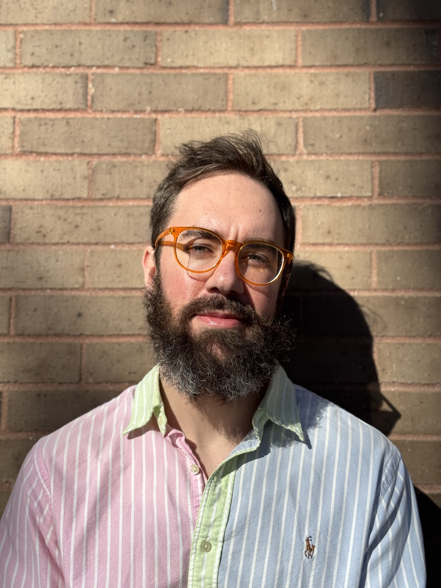

Since this site's raison d'être is professional, I should say a word or two about myself qua wage laborer
I'm currently the co-director of Cambridge AI Safety Hub. I do AI safety stuff and, as of time of writing, avoid cars, pedestrians, and other cyclists on the narrow Medieval streets of Cambridge, UK.
Until May 2025, I was a political science PhD candidate at SUNY Stony Brook. There I had the pleasure of taking courses with such luminaries as Stanley Feldman, Andy Delton, and Yanna Krupnikov. In mid-to-late 2026 I'll resume my dissertation under the guidance of Michael Peress — I put it on hold to pursue work in AI safety. It consists of three mostly independent chapters, one documenting public opinion on immigration's effect on immigration policymaking at the level of US states, a second chapter covering cross-national comparisons of the urban-rural divide, and the third analyzing urban-rural moves and ideological shifts in the Netherlands.
Before starting my PhD, I taught English for a few years in Ecuador and Peru. And before that, I triple majored in philosophy, psychology, and German at the University of Arkansas (with a year spent at Karl-Franzens Universität in Graz, Austria).